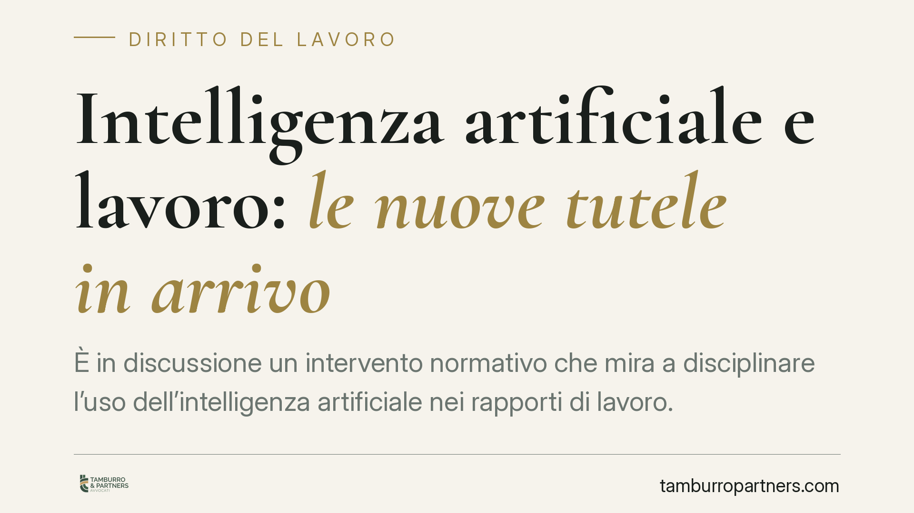

Intelligenza artificiale e lavoro: le nuove tutele in arrivo
È in discussione un intervento normativo che mira a disciplinare l'uso dell'intelligenza artificiale nei rapporti di lavoro. L'obiettivo sarebbe garantire trasparenza e controllo umano quando algoritmi contribuiscono a decisioni su assunzioni, turni e valutazioni. Il quadro non è ancora definitivo: conviene seguirne l'evoluzione senza darne per certe scadenze o contenuti.

Lo stato dell'iter normativo
Una premessa necessaria. Alcune fonti riferiscono di un decreto legislativo sull'intelligenza artificiale che introdurrebbe nuove regole per l'uso di sistemi automatizzati nei rapporti di lavoro. Allo stato, il testo e la sua data di entrata in vigore non risultano confermati in via ufficiale. Trattiamo quindi la materia in chiave prospettica: numerazione, contenuti puntuali e tempistiche andranno verificati sulle fonti ufficiali (Gazzetta Ufficiale) prima di assumere qualsiasi decisione organizzativa.
Il tema, tuttavia, non nasce dal nulla. Si inserisce in un percorso già avviato a livello europeo con il Regolamento (UE) 2024/1689 (AI Act), che classifica come "ad alto rischio" diversi sistemi di IA impiegati nella gestione del personale, e in un quadro interno che da tempo impone obblighi di trasparenza sui processi decisionali automatizzati.
Il contesto normativo già vigente
Sul piano nazionale, il riferimento attuale è l'art. 1-bis del D.lgs. 152/1997, inserito dall'art. 4 del D.lgs. 104/2022 (cosiddetto "Decreto Trasparenza"). La norma impone al datore di lavoro obblighi informativi quando utilizza "sistemi decisionali o di monitoraggio automatizzati" deputati a fornire indicazioni rilevanti ai fini dell'assunzione, della gestione o della cessazione del rapporto, nonché dell'assegnazione di compiti e della sorveglianza.
Sul piano della protezione dei dati, rileva l'art. 22 del Regolamento (UE) 2016/679 (GDPR), che riconosce all'interessato il diritto di non essere sottoposto a una decisione basata "unicamente" su un trattamento automatizzato, salvo specifiche eccezioni e comunque con garanzie, tra cui l'intervento umano. È su questa architettura che un eventuale nuovo decreto andrebbe a innestarsi.
Cosa intendiamo per decisione algoritmica
Il perimetro è più ampio di quanto si creda. Rientrano, tra gli altri:
- Selezione e recruiting: screening automatizzato dei curricula e ranking dei candidati.
- Organizzazione del lavoro: assegnazione di turni, mansioni e carichi tramite software.
- Valutazione delle performance: scoring, metriche di produttività, indici comportamentali.
- Gestione del rapporto: monitoraggio dell'attività, segnalazioni, supporto a provvedimenti disciplinari o di cessazione.
I tre obblighi che il quadro delineerebbe
Al di là della singola norma in discussione, la direzione è chiara e ruota attorno a tre pilastri:
- Informativa: il lavoratore deve sapere se e come un sistema automatizzato incide sulla sua posizione, con indicazione di logiche, finalità e dati trattati.
- Spiegabilità: le decisioni assistite da algoritmi devono poter essere comprese e motivate, non ridotte a un output opaco.
- Supervisione umana: deve restare un controllo effettivo da parte di una persona, coerente con il principio dell'art. 22 GDPR che limita le decisioni "unicamente" automatizzate.
Implicazioni pratiche
Per il datore di lavoro. Aumenta il peso della documentazione: diventa centrale sapere quali software sono in uso, cosa fanno, su quali dati operano e chi, in concreto, valida le decisioni. Un sistema non mappato è un rischio sia di contenzioso sia sanzionatorio.
Per il lavoratore. Si rafforza la possibilità di comprendere e contestare decisioni che lo riguardano, chiedendo trasparenza sui criteri applicati e sull'esistenza di un intervento umano. La tutela non si attiva da sé: presuppone consapevolezza degli strumenti coinvolti.
Cosa fare in concreto
- Mappare i sistemi automatizzati già in uso nelle funzioni HR, indicando per ciascuno finalità, dati trattati e decisioni influenzate.
- Verificare le informative in essere alla luce dell'art. 1-bis D.lgs. 152/1997, integrandole dove carenti.
- Documentare la presenza di un controllo umano effettivo sulle decisioni rilevanti, con tracciabilità delle validazioni.
- Monitorare l'iter normativo sulle fonti ufficiali, senza anticipare adempimenti su testi non ancora confermati.
- Coinvolgere DPO e funzioni IT nella valutazione d'impatto, in raccordo con GDPR e AI Act.
È opportuno avviare questa ricognizione con anticipo rispetto all'eventuale entrata in vigore di nuove regole: una mappatura ordinata resta utile a prescindere, perché gli obblighi di trasparenza sui sistemi automatizzati sono già oggi vigenti.
---
Contributo informativo a cura di Tamburro & Partners Avvocati - Avv. Giuseppe Tamburro. Non costituisce parere legale.
Ogni storia di lavoro ha i suoi tempi.
Se gestisci HR e vuoi un confronto su contenzioso, ispezioni o licenziamenti, scrivi allo studio. Ti rispondiamo entro un giorno lavorativo.